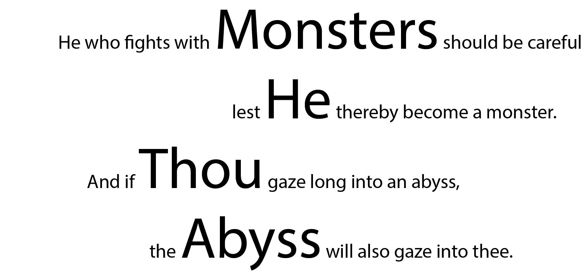

Week 5
This week we areexploring more with CorelDraw and Laser printing. The assignment is to create an engraving on a bottle and a personal stamp.
My design for the bottle is simply a quote from Nietzsche that I like a lot. The orginial file is here.

However, I messed up the settings and the laser cutter only cut through part of the paint.

Thus I put the tape alongside the first letter H, and try to manipulate the laser such that the cut fits the original.

The result is much better.